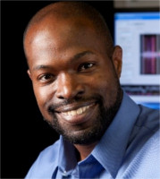
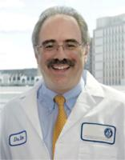
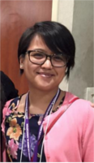

Speakers
An amazing lineup to help advance your career as a physician scientist
Keynote Speakers
Kafui Dzirasa, MD, PhD

Friday, April 21st
11:00 am – 11:45 am
TBA
Associate Professor at the Duke Institute for Brain Science and Sidney R. Baer, Jr. Prizewinner for Schizophrenia Research
Kafui Dzirasa is the first African American to complete a PhD in Neurobiology at Duke University. His research interests focus on understanding how changes in the brain produce neurological and mental illness, and his graduate work has led to several distinctions including: the Somjen Award for Most Outstanding Dissertation Thesis. In 2009, Kafui obtained an MD from the Duke University School of Medicine. He was subsequently appointed as an assistant professor and house staff in the Department of Psychiatry and Behavioral Science at the Duke University School of Medicine.
Kafui has served on the Board of Directors of the Student National Medical Association: a national organization dedicated to the eradication of health care disparities. Kafui received the Charles Johnson Leadership Award in 2007, and he was recognized as one of Ebony magazine’s 30 Young Leaders of the Future in February 2008. He has also been awarded the International Mental Health Research Organization Rising Star Award, the Sydney Baer Prize for Schizophrenia Research, and his laboratory was featured on CBS 60 Minutes in 2011.
Kafui’s ultimate goal is to combine his research, medical training, and community experience to improve outcomes for diverse communities suffering from Neurological and Psychiatric illness.
Eric Kandel, MD

Friday, April 21st
4:00 pm – 4:30 pm
TBA
Kavli Professor and Director of the Kavli Institute for Brain Science and Co-Director of the Mortimer B. Zuckerman Mind Brain Behavior Institute
Eric R. Kandel, M.D., is University Professor at Columbia University; Kavli Professor and Director, Kavli Institute for Brain Science; Co-Director, Mortimer B. Zuckerman Mind Brain Behavior Institute; and an Investigator at the Howard Hughes Medical Institute. A graduate of Harvard College and N.Y.U. School of Medicine, Kandel trained in Neurobiology at the NIH and in Psychiatry at Harvard Medical School. He joined the faculty of the College of Physicians and Surgeons at Columbia University in 1974 as the founding director of the Center for Neurobiology and Behavior. At Columbia Kandel organized the neuroscience curriculum. He is an editor of Principles of Neural Science, the standard textbook in the field now in its 5 th edition. In 2006, Kandel wrote a book on the brain for the general public entitled In Search of Memory: The Emergence of a New Science of Mind, which won both the L.A. Times and U.S. National Academy of Science Awards for best book in Science and Technology in 2008. A documentary film based on that book is also entitled In Search of Memory. In 2012 Kandel wrote The Age of Insight: The Quest to Understand the Unconscious in Art, Mind, and Brain, from Vienna 1900 to the Present, which won the Kreisky Award in Literature, Austria's highest literary award. Kandel’s new book entitled, Reductionism in Art and Brain Science: Bridging the Two Cultures, published by Columbia University Press has just been released.
Kandel’s research has been concerned with the molecular mechanisms of memory storage in Aplysia and mice. More recently, he has studied animal models in mice, age related memory disorders, post-traumatic stress disorders, nicotine, alcohol, marijuana and cocaine addiction.
Kandel has received twenty-three honorary degrees, is a member of the U.S. National Academy of Sciences as well as being a Foreign Member of the Royal Society of London and a member of the National Science Academies of Austria, France, Germany and Greece. He has been recognized with the Albert Lasker Award, the Heineken Award of the Netherlands, the Gairdner Award of Canada, the Harvey Prize and the Wolf Prize of Israel, the National Medal of Science USA and the Nobel Prize for Physiology or Medicine in 2000.
Leonard Zon, MD

Satruday, April 22nd
10:45 pm – 11:15 pm
TBA
Grousbeck Professor of Pediatric Medicine at Harvard Medical School
Dr. Zon is the Grousbeck Professor of Pediatric Medicine at Harvard Medical School, an Investigator at Howard Hughes Medical Institute, and the Director of the Stem Cell Program at Boston Children’s Hospital. He is internationally-recognized for his pioneering work in stem cell biology and cancer genetics, and has been the preeminent figure in establishing zebrafish as an invaluable genetic model for the study of the blood and hematopoietic development.
Julie Gerberding, MD, MPH

Saturday, April 22nd
4:00 pm – 4:30 pm
TBA
Executive Vice President & Chief Patient Officer of Strategic Communications, Global Public Policy, & Population Health
Dr. Julie Gerberding is Executive Vice President and Chief Patient Officer, Strategic Communications, Global Public Policy, and Population Health at Merck & Co., Inc., where she also has responsibility for the “Merck for Mothers” global program to prevent maternal mortality and the Merck Foundation. She joined Merck in January 2010 as president of Merck Vaccines and led efforts to make the company’s vaccines more available and affordable to people in resource-limited countries around the world.
She left her tenured faculty position at the University of California, San Francisco in 1998 to lead the U.S. Centers for Disease Control and Prevention (CDC) Division of Healthcare Quality Promotion and then served as the CDC Director from 2002 to 2009. As director, she led the CDC through more than 40 emergency responses to public health crises, including anthrax bioterrorism, SARS, and natural disasters. She also advised governments around the world on urgent issues such as pandemic preparedness, AIDS, antimicrobial resistance, tobacco, and cancer.
Dr. Gerberding currently serves on the Boards of CWRU, National Association of City and County Health Officials (NACCHO) Foundation, MSD Wellcome Trust Hilleman Laboratories, and the BIO Executive Committee. She has received more than 50 awards and honors, including the United States Department of Health and Human Services (DHHS) Distinguished Service Award for her leadership in responses to anthrax bioterrorism and the September 11, 2001 attacks. She was named to Forbes Magazine's 100 Most Powerful Women in the World in 2005 through 2008 and to TIME Magazine's 100 Most Influential People in the World in 2004.
S. Louis Bridges, MD, PhD
Sunday, April 23rd
9:30 am – 10:00 am
TBA
Director of the UAB Division of Clinical Immunology and Rheumatology
S. Louis Bridges, Jr., MD, PhD is Anna Lois Waters Endowed Professor of Medicine at the University of Alabama at Birmingham and has served as Director of the UAB Division of Clinical Immunology and Rheumatology since 2009. He is also the Director of the UAB Comprehensive Arthritis, Musculoskeletal, Bone, and Autoimmunity Center. Dr. Bridges received a Bachelor of Science degree from the University of Notre Dame, and an MD degree from Louisiana State University School of Medicine in New Orleans, Louisiana. After serving as a Resident and Chief Medical Resident at the University of Texas Medical Branch in Galveston, Texas, he completed a fellowship in Rheumatology at UAB, where he also obtained a PhD degree in Microbiology. His research has been continuously funded by NIH throughout his career and is focused on the identification of genetic influences on rheumatoid arthritis susceptibility and severity, particularly in African-Americans, autoantibodies in RA, biomarkers of treatment response in RA. He has authored more than 120 manuscripts, 20 book chapters, and served as Editor of three editions of the text Vasculitis, published by Oxford University Press. He serves as Principal Investigator of the NIH-funded UAB Multidisciplinary Clinical Research Center, Co-Director of the NIH- funded UAB Center of Research Translation in Gout and Hyperuricemia, and Associate Director of the NIH-funded UAB Rheumatic Disease Cores Center. He has been named to the Best Doctors in America list yearly since 2003, is Director of UAB’s NIH-funded Training Program in Rheumatic and Musculoskeletal Diseases Research, and is a Co-Editor of Arthritis & Rheumatology. He has served on many grant review panels and is former Chair of the NIH Arthritis, Musculoskeletal, and Skin Study Section. Dr. Bridges serves as Chair of the American College of Rheumatology’s Committee on Research and is a member of the Board of Directors and Scientific Advisory Council of the Rheumatology Research Foundation. He also serves as a member of the Arthritis Foundation’s Medical and Scientific Advisory Committee.
Panel Speakers
Alessia Fornoni, MD, PhD

Sunday, April 23rd
10:00 am – 11:00 pm
Work/Life Balance Panel
TBA
Director and Chair, Peggy and Harold Katz Family Drug Discovery Center
Dr. Alessia Fornoni obtained her MD and her PhD degree in Medical Pharmacology at the Universita' degli Studi di Pavia (Italy). She later joined the laboratory of Renal Cell Biology (Vascular Biology Institute) at the University of Miami, where she worked on animal models of diabetic nephropathy and on the role of mesangial stem cells progenitors under the direct supervision of Drs. Liliane and Gary Striker. After her post-doctoral fellowship, Dr. Fornoni completed the Internal Medicine and Nephrology training at the University of Miami (Basic Scientist Investigator pathway). She is Board Certified in both Internal Medicine and Nephrology. She currently devotes 75% of her time to research and 25% to patient care. Dr. Fornoni’s research interest is focused on proteinuria and kidney diseases, with particular interest in diabetic nephropathy and focal and segmental gloemrulosclerosis. Dr. Fornoni is currently interested in the intracellular signaling pathways modulated by intracellular lipids. Dr. Fornoni research goal is to translate her basic science findings into clinical research through the identification of new therapeutic targets for chronic kidney disease.
David Ostrow, MD, PhD

Sunday, April 23rd
10:00 am – 11:00 pm
Work/Life Balance Panel
TBA
DavidOstrowConsulting, David Ostrow & Associates, LLC
During his training in the MD/PhD Program at the University of Chicago, Dr. David Ostrow co-founded the first gay community health center, now the Howard Brown Health Center of Chicago. There he identified Hepatitis B as a common sexually transmitted infection (STI) among gay men, which led to his Chicago PI role in the CDC-funded Hep B Epidemiology and Vaccine Efficacy Studies (1976-81). As the founding PI of the subsequent Chicago MACS (1983-1985), then co-PI of the Coping & Change Study of Men in the Chicago MACS (1985-1999), and later founder of the Behavioral Working Group (BWG) of the MACS (1991-2011), he focussed on the relationship between sexual behavior, drug use and the evolution of HIV transmission and prevention among drug using MSM. He has published 175 peer-reviewed papers, 50+ book chapters and presented 60+ times at International AIDS Conferences. He is an Investigator or consultant on most of the NIDA funded studies of drugs, alcohol and HIV in the MACS, including his own study of the Social and Risk Networks Assessment of younger Black MSM (2009-2011). This study led to a recently funded study of the dynamic roles of social and risk networks as drivers of the increasing epidemic of new HIV infections among younger Black MSM in Chicago. As the senior behavioral investigator in the MACS, he plans to use the upcoming open recruitment of men at highest risk of or recently infected with HIV to extend these studies to the geographically and racially diverse cohort of HIV+ and HIV- men.
Since the late ‘90s, Dr. Ostrow has been active in the movement to change failed national drug policies, such as cannabis prohibition, with more effective and compassionate policies, including regulation and legalization of cannabis use, integration of Cannabinoid Medicine training into the Medical Student curriculum, and the formation of a Community-Based Clinical Cannabis Research Network that can inform scientifically based MC treatment guidelines.
Karen Sibert, MD

Sunday, April 23rd
10:00 am – 11:00 pm
Work/Life Balance Panel
TBA
aPennedPoint Blog Author and Anesthesiologist at UCLA
Born and raised in Amarillo, Texas in the 1960s, Karen was accepted to Princeton as part of the school’s second entering class of female students. She graduated with an English degree and became a reporter for the Wall Street Journal. She later applied and was accepted to Baylor College of Medicine. After choosing to specialize in anesthesiology, Karen completed her residency training and fellowship in anesthesiology at the Yale University Hospital in New Haven, Connecticut. She then joined the faculty at Duke University School of Medicine. Since 1999, Karen has worked in Los Angeles as a clinical anesthesiologist and an Associate Professor of Anesthesiology, teaching residents and fellows in training. She hasn’t let that get in the way of her writing career. Besides authoring aPennedPoint blog, Karen was recently published in The New York Times and is a regular contributor to the CSA Bulletin. Karen’s name also frequently appears as an author of articles in medical journals and chapters in both medical and general interest books. She practices full time, specializing in anesthesia for thoracic surgery and other high-risk adult cases.
Panel Moderators
Michelle Caunca, BS

Sunday, April 23rd
10:00 am – 11:00 pm
Work/Life Balance Panel
TBA
MD/PhD Student at University of Miami Miller School of Medicine
Ms. Caunca received her B.S. in Neurobiology with a minor in Psychology at the University of California, Irvine (UCI), graduating cum laude with Honors in Biological Sciences and Campuswide Honors. She worked in the The 90+ Study at UCI under the mentorship of Claudia H. Kawas, MD, and Maria Corrada, ScD. Currently, she works with Clinton Wright, MD, MS and Tatjana Rundek, MD, PhD in the Northern Manhattan Study at the University of Miami Miller School of Medicine. She currently studies brain MRI metrics of white and gray matter integrity and their relation to cognition in an older, mostly Hispanic/Latino cohort. She aspires to become a physician-scientist specializing in neuroepidemiology and cognitive aging.